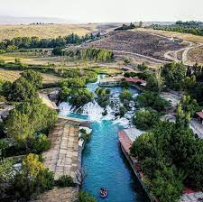

Explore the Enchanting City of Hermel, Lebanon
Unveiling the Beauty of Hermel
Nestled amidst the majestic mountains of northeastern Lebanon lies the captivating city of Hermel. Steeped in history and brimming with natural splendor, Hermel offers an unforgettable experience for travelers seeking a unique blend of cultural immersion and outdoor adventure. From ancient citadels whispering tales of bygone eras to vibrant souqs showcasing local treasures, Hermel promises a journey that will enthrall your senses.